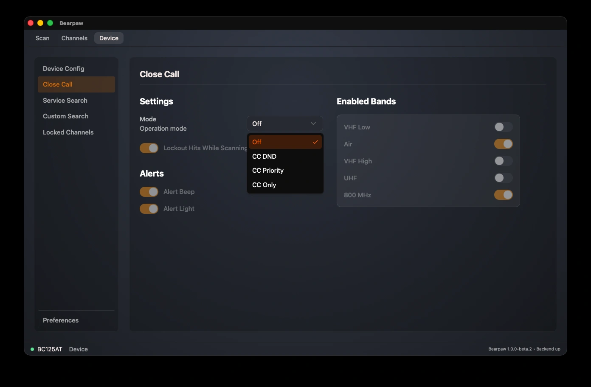

Close Call
Close Call is Uniden's nearby-strong-signal detector. It listens for a strong transmission from a radio physically close to you, like a handheld at an event, and jumps to that frequency automatically, even if it isn't in any of your channels.
Changes here apply to the scanner immediately — the app writes them in programming mode, and live scanning pauses while it does. A failed write shows a red error message.

Mode
Mode is the master switch, with three settings:
- Off: Close Call disabled.
- CC DND ("Do Not Disturb"): only checks between your normal scanning, so it won't interrupt what you're already listening to.
- CC Priority: checks continuously, interrupting other activity to catch close calls the moment they happen.
When Mode is Off, every other Close Call setting on the page is greyed out.
Other settings
With a mode active, you can also set:
- Lockout Hits While Scanning: automatically skip a frequency Close Call finds, so it doesn't keep re-triggering on the same one.
- Alert Beep: beep when a close call is detected.
- Alert Light: flash the scanner's backlight when one is detected.
- Enabled Bands: five switches (VHF Low, Air, VHF High, UHF, 800 MHz) choosing which radio bands Close Call watches. Turning off bands you don't care about makes it faster and reduces false hits.